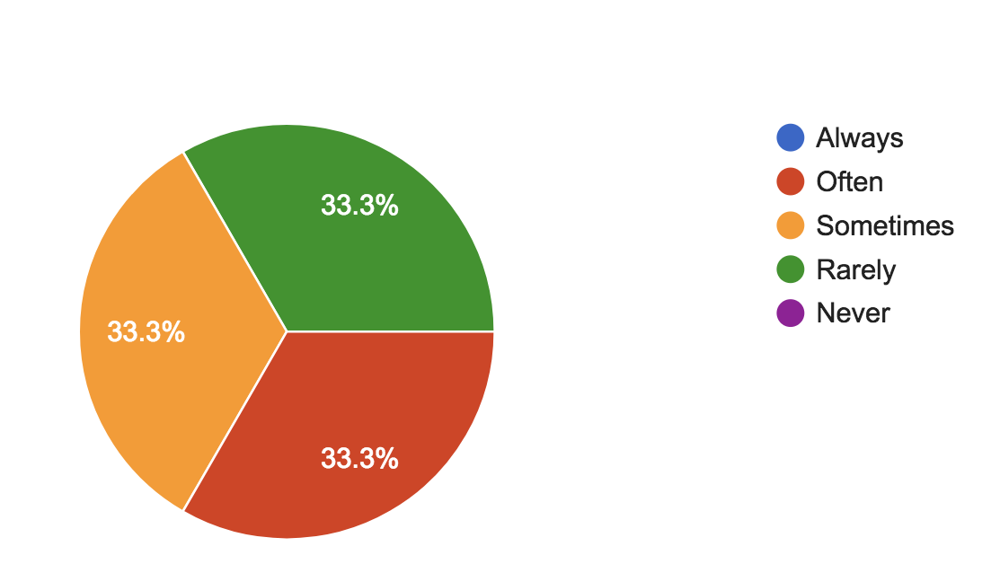

The Problem
Few things will make people run faster than discovering their bus is a mere 2 minutes away from the bus stop.
Transit officials have identified a problem they would like to solve.
Due to expansion, numerous bus routes have been recently added and many of those routes stop at the same bus stop. Riders want to know what the next arriving bus is and how much time they have to get to the bus stop. Simply rushing to the stop when you see a bus coming no longer works because it might not be the bus the rider is expecting.
Riders are currently complaining the most about the bus stop at Washington and State, which has seven bus lines serving the stop.
Discovery - Survey
When waiting at a bus stop, how often do you think your bus is arriving when it is actually a different bus?
A large portion of people experience or have experienced the frustration of not knowing which bus is arriving when waiting at the stop.

Do you, or have you ever used a transit navigation app?
100% of users had used a transit navigation app and the top navigation app was google maps.


If a transit app was designed specifically for your needs, with only THREE features, which would they be?
The three most popular bus transit app ideas where to have it show the cheapest and fastest route options, to have real time tracking including alerts for delays and early arrivals and to have it show when and when to catch a particular bus.

Strategy
Google Maps is a very well known app. Widely available on almost all devices and for the most part very reliable it is a huge player in the transit app world. I like that it has most transport options covered from walking to driving to taking a train. Setting up travel options is easy and because it covers all modes of transport I don’t need to use another app to figure out overall travel time.
I performed a s.w.o.t analysis and found room in the market for a competitor to create a similar app but with a more attractive interface. An app specific to one mode of transport with high accuracy for bus schedules will also give a competitor an advantage.

Transit is a bus and uber specific travel navigation app. It has a very friendly visual design with simple fun features. When the app is first opened, and you allow the app to use your location, a bus drives away which makes for an easy page transition. The live tracking of nearby busses and shared rides is a pleasant accessory. It was fascinating to see how quickly and smoothly the live tracking updated depending on the area. This product is aimed at consumers and can be accessed for free. It’s functionality can benefit all generations and demographics.
In my s.w.o.t analysis I found that a competitor would benefit by creating an app with more specific travel data with details about the user position relative to bus station locations. There is also room to create an app which describes functions more thoroughly. If the user had access to bus route reviews or forums I think this would help them in their decision process, especially those who don’t enjoy riding the bus due to bad experiences.

Architecture
I had three people participate in a user test for the BusyBus prototype. Using the Marvel app the participants navigated the three pages while giving feedback on the experience.


I observed a consistent desire to use the ‘Plan a ride’ section at the top of the opening screen, although this was not the direction I had planned for the test, it showed me that it could be a useful and attractive feature for further development. The users also noted the icons at the bottom of the screen being well presented and easy to understand. The bus icon made sense to most and when on the station screen having a dash above it seemed helpful to the participants as it communicated where they were currently. All the participants found the prototype easy to understand and liked the concept. It was difficult to get negative comments but I think with more pages and the ability to move around problems will arise.
The main trend I noticed was people wanting to know where and when to catch a bus. This was made clear through the survey and especially the user test, being that most participants opted to try the ‘Plan a ride’ search bar, assuming that planning a ride would be most relevant for their bus riding needs. Going forward and during future testing I will make sure to gather more of the users negative thoughts and reactions.